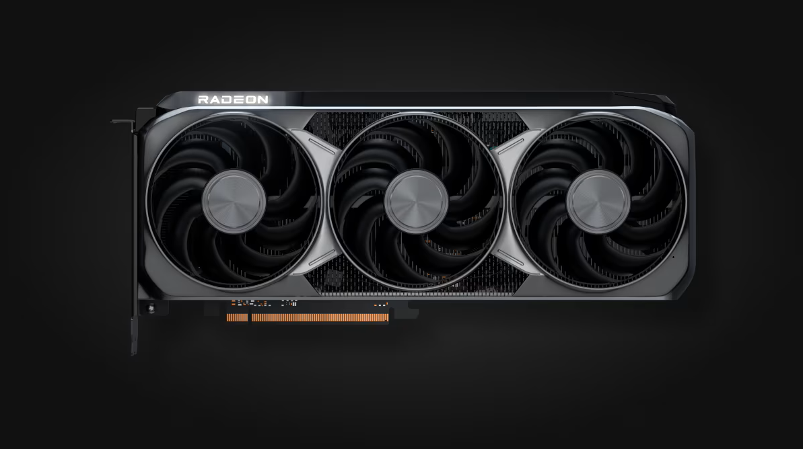

AMD Radeon RX 9070 XT
is a powerful sub-flagship graphics card built on AMD's newest RDNA 4 graphics architecture. The model targets the upper mid-range segment and is designed as an uncompromising solution for maximum graphics settings at 1440p (2K), as well as confident gaming at 4K. The flagship achievement of this generation is a major improvement in ray tracing performance and the integration of full hardware-based artificial intelligence.


Frame Generation (FSR Frame Generation)
is a frame interpolation technology that artificially increases the frame rate (FPS) in games. Frame generation takes two already rendered frames, analyzes pixel motion and vector data, and "draws" an intermediate virtual frame between them. This visually doubles or even triples the smoothness of gameplay.
FSR 4.1 — New Generation Upscaling
In June 2026, AMD released FSR 4.1 — an updated version of its machine-learning-based upscaling technology. It delivers a sharper image in motion, better temporal stability, and noticeably speeds up Ultra Performance mode compared to the previous FSR 4.0 version.
- Improved image sharpness in motion
- More stable image with reduced ghosting
- Faster Ultra Performance mode
- Support for more than 300 games
History of FSR technology development:
- FSR 1 — basic upscaling
- FSR 2 — temporal anti-aliasing (TAA-based)
- FSR 3 — frame generation added
- FSR 4 — AI-based upscaling, exclusive to RDNA 4
- FSR 4.1 — improved quality and RDNA 3 support